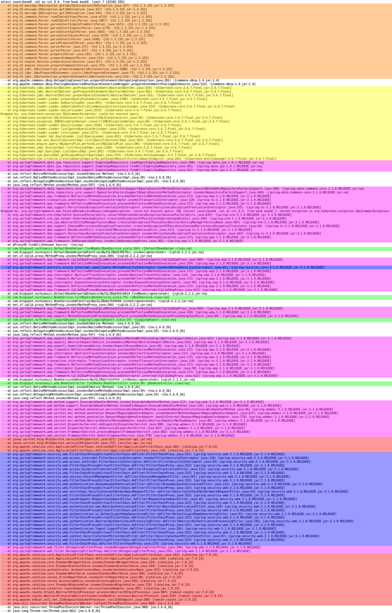

Tomasz Nurkiewicz
Around IT in 256 seconds podcast
Java Champion, CTO at DevSkiller
sleep() everywhere, like crazy
Thread thread = new Thread(() -> System.out.println("Hello"));
thread.start();
thread.join();
From: Linux Kernel Development, Chapter 3: SchedulingThe scheduler is the component of the kernel that selects which process to run next.
The scheduler [...] can be viewed as the code that divides the finite resource of processor time between the runnable processes on a system.
From Java on Solaris 7 Developer's Guide > Multithreading ModelsImplementations of the many-to-one model (many user threads to one kernel thread) allow the application to create any number of threads that can execute concurrently. [...]
this multithreading model provides limited concurrency and does not exploit multiprocessors.
From Java on Solaris 7 Developer's Guide > Multithreading Modelsa user-level threads library provides sophisticated scheduling of user-level threads above kernel threads.
The kernel needs to manage only the threads that are currently active.
From Java on Solaris 7 Developer's Guide > Multithreading Modelseach user-level thread created by the application is known to the kernel [...]
The main problem with this model is that it places a restriction on you to be careful and frugal with threads, as each additional thread adds more "weight" to the process.
jstack PID
"Thread-0" #13 prio=5 os_prio=31 cpu=0.13ms elapsed=71.09s
tid=0x00007fd008917000 nid=0x6a03
waiting on condition [0x000070000e2a6000]
-H
[...] all individual threads will be displayed.
Otherwise, top displays a summation of all threads in a process.
explainshell.com
PID COMMAND %CPU TIME #TH #WQ #PORT MEM PURG CMPRS PGRP PPID STATE BOOSTS %CPU_ME %CPU_OTHRS UID FAULTS COW MSGSENT MSGRECV SYSBSD SYSMACH CSW PAGEINS
75368 java 0.0 00:10.00 38 1 146 84M 0B 0B 75082 75082 sleeping *0[1] 0.00000 0.00000 502 47394 393 5635 2795 316143+ 11062 158846+ 8
76787 java 0.0 00:20.31 43 1 158 130M 0B 0B 75082 75082 sleeping *0[1] 0.00000 0.00000 502 95759 400 12434 6179 324542 21096 168946 291 44984
Which Java thread consumes my CPU?
Source: Are Linux kernel threads really kernel processes?from the kernel point of view, only processes exist [...]
and a so-called thread is just a different kind of process
Thread.start() considered inefficient-Xss)
Thread t = Thread.startVirtualThread(() ->
System.out.println("Hello")
);
Builder API:
Thread t = Thread
.ofVirtual()
.name("MyThread")
.unstarted(() -> task());
ExecutorService
ExecutorService es = Executors.newVirtualThreadExecutor();
ThreadFactory
ThreadFactory factory = Thread
.ofVirtual()
.factory();
sequential code that may suspend (itself) and resume (be resumed by a caller).
[...] may suspend or yield execution at some point [...] When [it] suspends, control is passed outside of the continuation, and when it is resumed, control returns to the last yield point, with the execution context up to the entry point intact
Pseudo-code
void main() {
c = continuation(foo)
c.run()
...
c.run()
}
void foo() {
...
bar()
...
}
void bar() {
...
yield()
buzz()
}
From: Project Loom: Fibers and Continuations for the Java Virtual Machine, modified
async / awaitThread.sleep()
private static void sleepMillis(long millis) throws InterruptedException {
if (currentThread() instanceof VirtualThread vthread) {
vthread.sleepNanos(millis * 1000000);
} else {
sleep0(millis);
}
}
Simplified for clarity
VirtualThread.parkNanos()
void parkNanos(long nanos) {
Future<?> unparker = scheduleUnpark(nanos);
try {
continuation.yield();
} finally {
cancel(unparker);
}
}
Simplified for clarity
CountDownLatch latch = new CountDownLatch(COUNT);
for (int i = 0; i < COUNT; i++) {
Thread.startVirtualThread(() -> {
try {
Thread.sleep(1_000);
latch.countDown();
} catch (InterruptedException ignored) {}
});
}
latch.await();
ForkJoinPool.commonPool() by default.
var carrierExecutor = Executors.newFixedThreadPool(1);
ThreadFactory factory = Thread.ofVirtual()
.name("Virtual-", 1)
.scheduler(carrierExecutor)
.factory();
var virtualExecutor = Executors.newThreadPerTaskExecutor(factory)
try (ExecutorService exec = Executors.newVirtualThreadExecutor()) {
//...
}
when the flow of execution splits into multiple concurrent flows, they rejoin in the same code block
Thread.startVirtualThread(() -> {
TimeUnit.HOURS.sleep(8)
runSomething();
});
var executor = Executors.newVirtualThreadExecutor();
//...
void onPlayer(player -> {
executor.submit(() -> handle(player));
});
try(var executor = Executors.newVirtualThreadExecutor()) {
for(URL image: images)
executor.submit(() ->
downloadBlocking(url);
);
}
CountDownLatchSemaphore
From Filtering irrelevant stack trace lines in logsRestTemplateTomasz Nurkiewicz
Slides: nurkiewicz.com/slides/loom